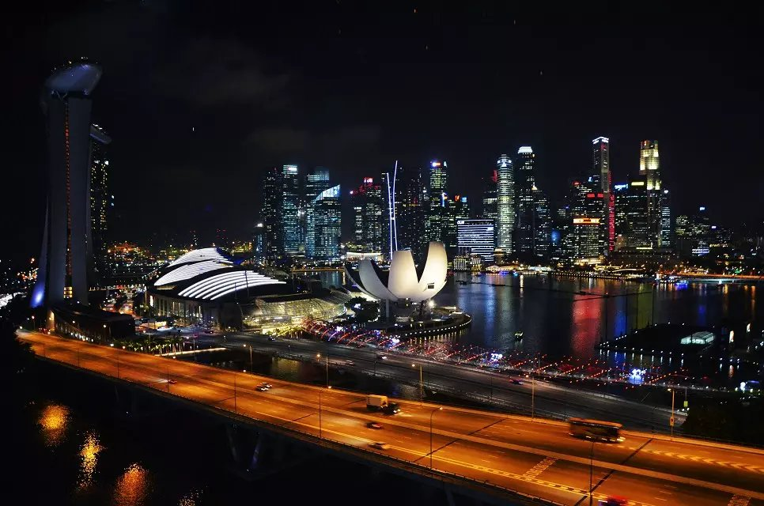
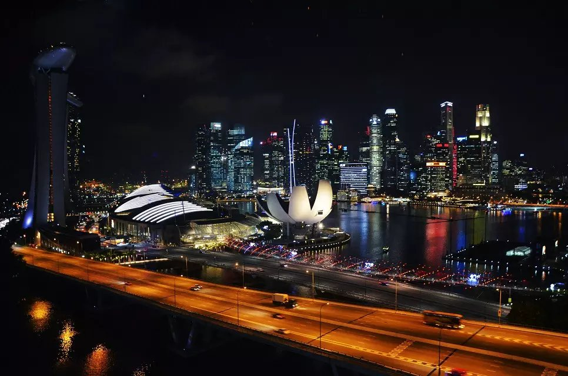

I like taking photos to record pretty scenes and moments. When I look at these photos, I can recall the previous experience and feelings, so I pick up some photos and share them with you.
Besides, if you want to share your stories or photos with me, feel free to contact me! I am a good listener and enjoy listening to others’ stories.


 
